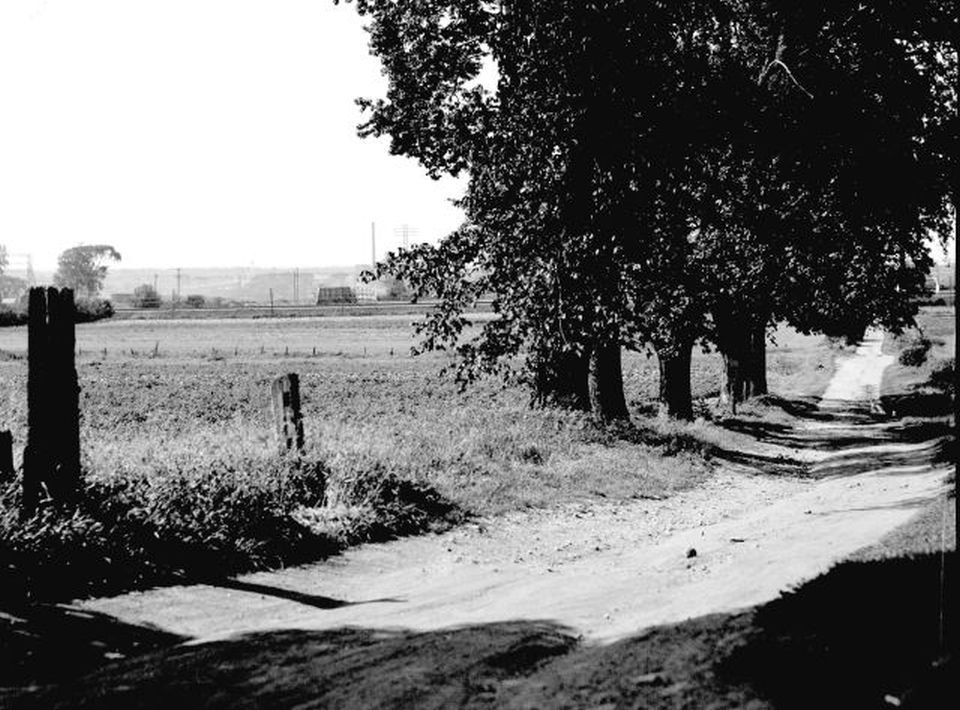
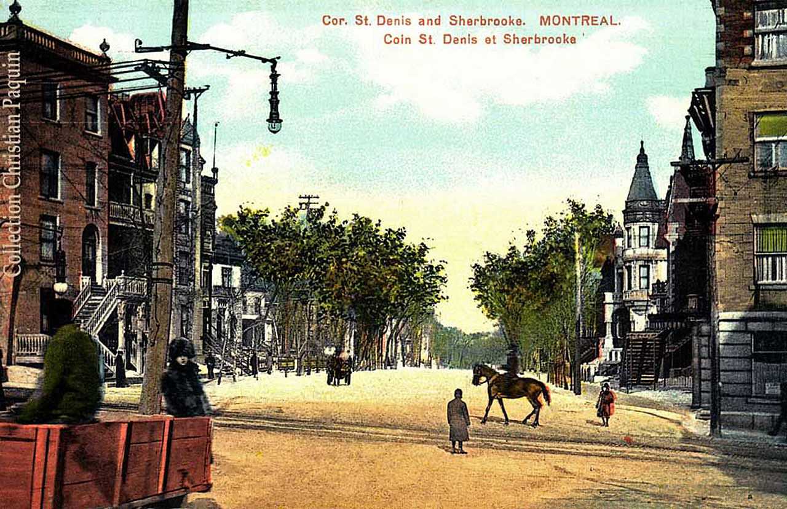

Home
Safe Streets is a project dedicated to promoting safer and more sustainable transportation options in urban areas. The goal is to encourage the development of infrastructure that supports alternative modes of transportation, such as biking and public transit, to reduce traffic congestion and improve overall quality of life for everyone.
Safer streets are important for several reasons:
One of Montreal's main streets, Rue Sherbrooke, was once pedestrain friendly and open for all.
The history of Rue Sherbrooke can be traced back to the early 19th century, when it was originally laid out in 1817 as "Chemin des Sulpiciens." It was named after the Society of Saint-Sulpice, a Catholic order of priests who played a crucial role in the founding and development of Montreal.
As the city grew and expanded, Rue Sherbrooke evolved into a major thoroughfare, connecting the eastern and western parts of the island of Montreal. It passes through several notable neighborhoods, such as the Golden Square Mile, which was once home to Canada's wealthiest families during the late 19th and early 20th centuries.
Today, Rue Sherbrooke is lined with a diverse range of institutions, landmarks, and attractions. These include McGill University, the Musée des beaux-arts de Montréal, and the Montreal Museum of Fine Arts, as well as numerous shops, galleries, and restaurants. The street continues to be an essential part of Montreal's urban fabric, reflecting the city's rich history and vibrant present.